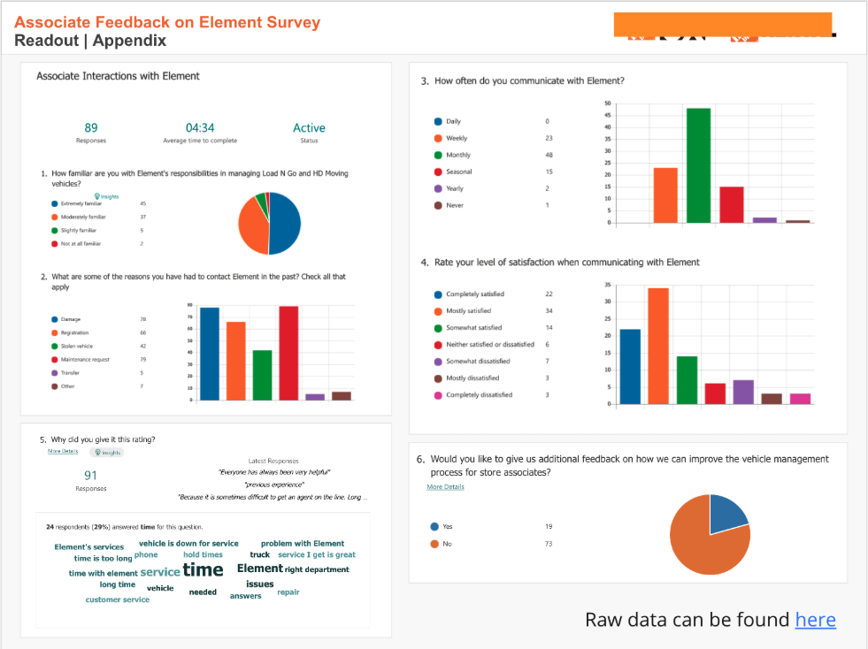
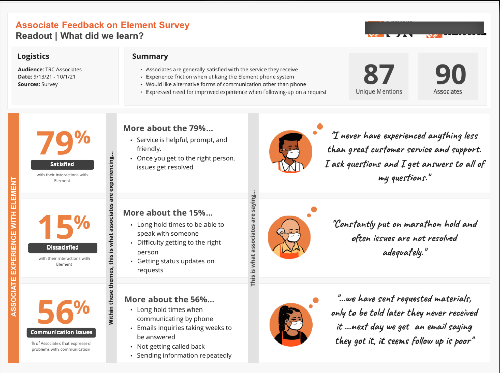
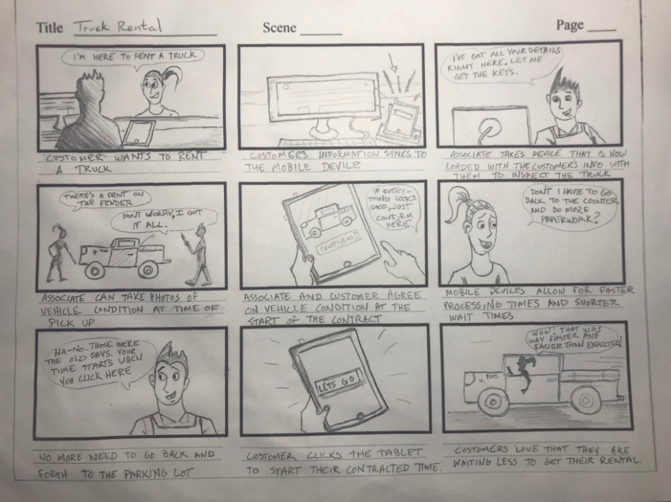
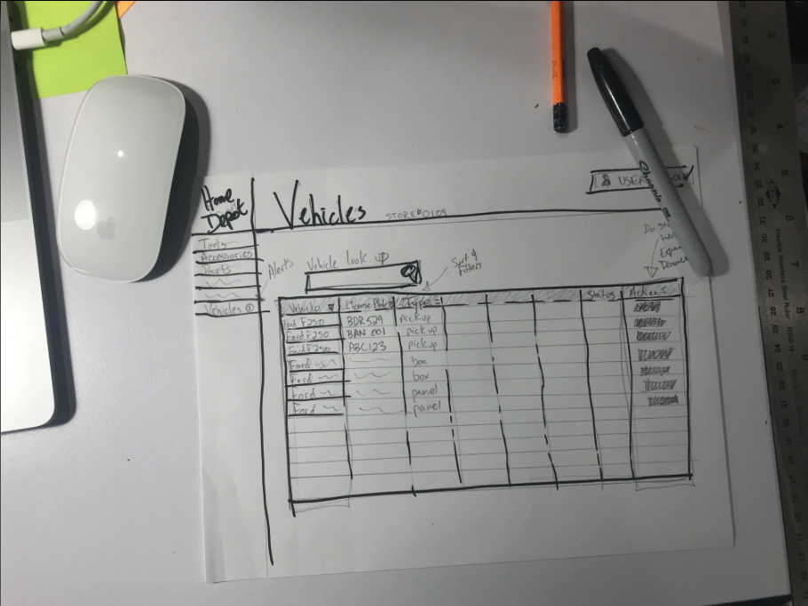
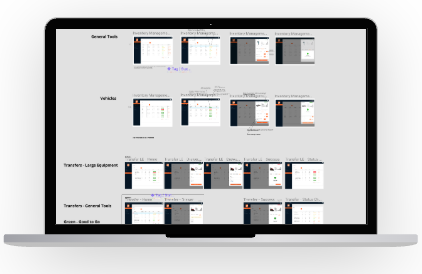
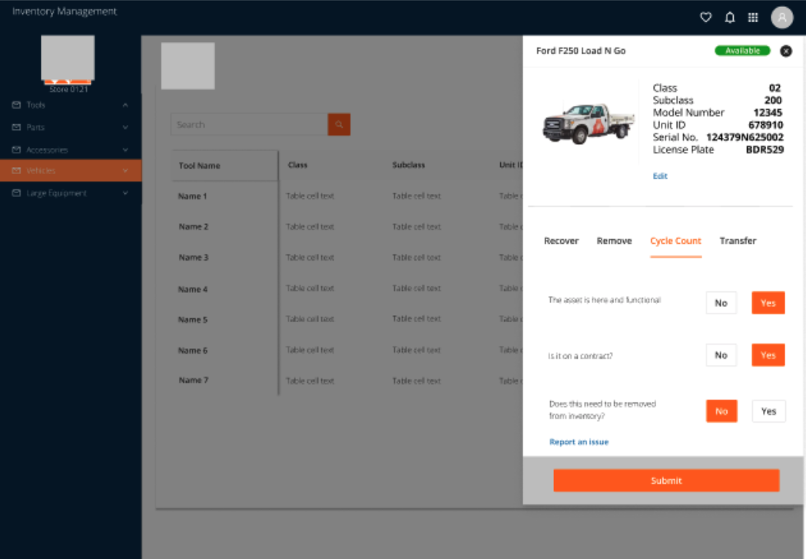

"We have a problem and we don't know where to start. Can you help?" — My favorite kind of problem.
This story starts with an email. An email that said: "We have a problem and we don't know where to start. Can you help?" My favorite kind of problem.
Home Depot's entire vehicle rental fleet is managed by a third party, Element. The problem involved two distinct user groups: Home Depot in-store associates and Element field technicians. Due to COVID-related supply chain strain, reduced manpower, and increased rental demand, inefficiencies in fleet maintenance had become a real business problem.
Element wanted to increase user satisfaction in order to handle the planned growth of the vehicle rental fleet. As the UX Designer on this initiative, I was responsible for scoping the problem, facilitating research, and creating the digital assets needed to solve it.
I sat down with the Vehicles team to scope the work, identify users, and map potential pain points. A mixed-methods approach of quantitative and qualitative research was used to establish a baseline of user sentiment and time-on-task.
To gather feedback from Rental Center Associates about their experience with Element, we set up a survey in Microsoft Forms and distributed it to 300 stores. Ninety associates responded and told us their story. The survey used closed questions and Likert scales, with follow-up interviews conducted to add depth to the data.

Associates mostly liked working with Element. The method of communication was the most frequently reported problem.
Associates expected a digital method of communication — not a phone tree. They told us exactly what was frustrating them and what they needed to fix it. We turned their feedback into data that stakeholders could actually act on.After launching the survey, we synthesized results and shared them in a readout with stakeholders. Key findings: associates liked Element as a partner, but the process of reaching them was broken. The most common pain point was communication — specifically the reliance on a phone-based system when associates expected something digital. Five respondents were also interviewed via video conference for additional context and detail.

I start almost every design process with low-fidelity sketches on paper. The goal isn't polish — it's to capture the end-to-end experience and surface opportunities that might not be obvious when looking at individual screens.
Storyboards were created to help stakeholders see the scope of work in context. Rough sketches also introduced the idea of incorporating tablets into the overall solution and helped connect individual pain points to broader initiatives like Mobile Contracts. This fast, scrappy approach allowed for rapid follow-up while ideas were still fresh.

What I learned from sketches: they reveal patterns that users already know and like. They also identify missing information — license plate numbers, for instance, were identified as a critical gap through this stage of the process.

Once usability issues were worked out through testing, final screens were designed in Figma following the Home Depot style guide and using the ANT design system. Key design decisions included:
High-fidelity prototypes were used to validate designs with users through moderated usability tests. Given the relatively small and specific user group, moderated tests were the right approach. One lesson from testing: small, subtle UI elements like blue text links for editing and reporting issues created more confusion than they solved — they were cut before launch.


This initiative showed that even large companies can move fast when given space to do so. Because this project lived outside the normal product roadmap, there was freedom to solve the big problem without getting bogged down in competing priorities.
Insisting on baseline metrics before starting gave the team something to rally around — and revealed opportunities in unexpected areas. Collaborative work, even with stakeholders who had limited availability, produced better results than siloed design work. And starting small, iterating quickly, and shipping early allowed us to take leaps rather than crawl.